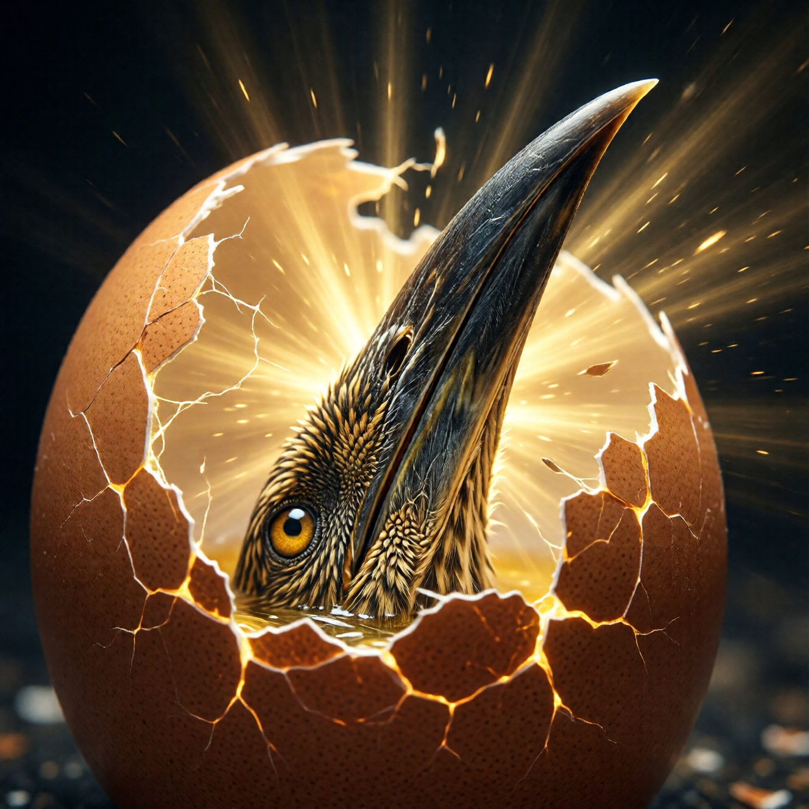

Клюв изнутри: инструменты разрушения

У тебя уже есть инструмент
Плохие новости: тебе не дадут лом, чтобы разбить скорлупу снаружи. Нет специального курса «Просветление за 21 день». Нет секретной мантры. Нет волшебной таблетки.
Хорошие новости: они тебе и не нужны. У тебя уже есть всё необходимое.
Это как если бы ты всю жизнь искал ключи, а они лежали в кармане. Буквально — в кармане.
Цыплёнок рождается с клювом. Маленьким, но достаточным. И этот клюв растёт вместе с ним. Никто не выдаёт цыплёнку клюв на выпускном. Он с ним родился.
Твой «клюв» — это способность видеть. Осознавать. Понимать, что происходит.
Каждый раз, когда ты видишь паттерн — ты клюёшь изнутри. Каждый раз, когда ты понимаешь ловушку — ты клюёшь изнутри. Каждый раз, когда ты не реагируешь автоматически — ты клюёшь изнутри.
Не чувствуешь ударов? Это нормально. Трещины накапливаются. Тысяча маленьких ударов — и однажды скорлупа лопается.
Инструмент 1: Осознанность
Не медитация-на-подушке-в-позе-лотоса-с-благовониями-и-мантрами. Хотя и это тоже. Если нравится.
Осознанность — способность видеть, что происходит, в момент, когда это происходит. Не потом. Не вчера вечером, когда ты анализируешь прошедший день. Не через неделю на сеансе у терапевта.
Прямо сейчас. В моменте. «О, вот это происходит».
Пример:
Без осознанности: Коллега сказал что-то обидное → ты злишься → ты огрызаешься → он огрызается → ты уходишь хлопнув дверью → вечером ты пересказываешь жене, какой он козёл → она устала это слушать → вы ругаетесь → ты засыпаешь обиженный → утром болит голова → ты опять на работе → коллега снова... С осознанностью: Коллега сказал что-то обидное → «о, злость поднимается» → пауза → «интересно, почему это так задело?» → выбор → спокойный ответ (или молчание) → вечер без драмы → жена довольна → ты спишь нормально → утром голова не болитРазница — в паузе. В этом «о».
Это «о» — клюв. Каждый раз, когда ты ловишь себя — ты долбишь скорлупу. Маленький удар. Но он считается.
Как развивать:
Наблюдай реакции. Не меняй их, просто замечай.Ты снова тревожишься перед встречей с начальником. Вместо «я не должен тревожиться» — «о, я снова тревожусь. Интересно. Привет, тревога. Давно не виделись. А, мы виделись вчера? Ну да, конечно».
Задавай вопрос «кто наблюдает?»Если ты можешь наблюдать свои мысли — ты не мысли. Кто тогда наблюдает?
Это не вопрос, на который нужен ответ. Это вопрос, который нужно держать. Как коан. Он делает работу сам.
Практикуй паузу.Между стимулом и реакцией есть пространство. Обычно — миллисекунда. Твоя задача — расширять его.
Хочется ответить резко? Пауза. Три секунды. Пять. Десять. Что изменилось?
Знаешь анекдот? Учитель спрашивает ученика: «Что делать, когда хочется ударить?» Ученик: «Сосчитать до десяти». Учитель: «А если всё ещё хочется?» Ученик: «Сосчитать до ста». Учитель: «А если всё ещё?» Ученик: «Ударить и считать в больнице».
Вот поэтому пауза — это тренировка, а не решение.
Инструмент 2: Вопрошание
Не вопросы-ответы. Не «почему небо голубое — потому что рассеяние света».
Вопросы-как-инструменты. Вопросы-отмычки. Вопросы, которые взламывают замки.
Правильный вопрос не требует ответа. Он — сам по себе — делает работу. Как бормашина стоматолога. Не надо понимать, как она работает. Достаточно, что она сверлит.
Вопросы-долбилки:
«Это правда?» — Применяй к любому убеждению. Особенно к «очевидным».«Я должен быть сильным». Это правда? Кто сказал? Что будет, если не буду?
«Деньги — это зло». Это правда? Правда-правда? Или удобная отмазка для того, кто не умеет их зарабатывать?
«Меня никто не любит». Это правда? Абсолютно никто? Включая маму? Включая собаку?
«Кто это сказал?» — Откуда взялась эта мысль? Это моё или чужое?Ты удивишься, сколько «своих» убеждений — на самом деле цитаты из детства. Папины слова. Мамины страхи. Дедушкина травма.
«Мужчины не плачут» — кто это сказал? Ты? Или пьяный дядя Витя в 1987 году?
«Что если наоборот?» — Противоположность твоего убеждения — тоже может быть правдой?«Нельзя доверять людям». А что если — можно? Не всем. Но некоторым?
«Успех требует жертв». А что если успех требует радости? Что если жертва — это признак неправильного пути?
«Кому это выгодно?» — Не в смысле заговора. В смысле: какая часть меня держится за это?«Я не могу уйти с работы». Кому выгодно так думать? Части, которая боится неизвестности? Части, которая боится осуждения? Части, которая на самом деле не хочет меняться?
«А что дальше?» — Если это правда — и что? Если это случится — и что?«Меня уволят». И что дальше? «Не найду работу». И что дальше? «Буду голодать». И что дальше? «Умру». И что дальше? «Ну... не знаю». Вот. Дошли до дна. Страх смерти. Как обычно.
Пример работы:
Убеждение: «Я должен быть успешным»
- Это правда? — А что такое успех? Миллион долларов? Семья? Признание? По чьим критериям? По твоим? По маминым? По инстаграма?
- Кто это сказал? — Родители? Общество? Реклама? Ты сам? Когда — сам? В пять лет? В пятнадцать?
- Что если наоборот? — Я могу быть ценным без «успеха»? Бомж ценен? Монах ценен? Ребёнок ценен?
- Кому это выгодно? — Какая часть меня держится за «успех»? Часть, которая хочет доказать папе? Часть, которая боится быть «никем»? Часть, которая думает, что её любят только за достижения?
- А что дальше? — Если я не буду успешным — что случится? Я умру? Буду несчастен? Или просто... буду? Как все? Как большинство?
Каждый такой вопрос — удар клювом. Не отвечай быстро. Живи с вопросом. Пусть он работает.
Инструмент 3: Честность
Самый острый клюв. И самый болезненный.
Честность — не «говорить правду другим». Это легко. Ну, относительно.
Честность — видеть правду о себе.
Это больно. Очень больно. Поэтому мы избегаем. Придумываем истории. Рационализируем. Оправдываем. Забываем.
Но каждый момент честности — пробоина в скорлупе.
Что значит быть честным с собой:
Признавать мотивы, которые не хочешь видеть.Ты помогаешь другим потому что добрый? Или потому что хочешь чувствовать себя нужным? Или потому что боишься, что без этого тебя не будут любить?
Возможно — всё вместе. Но первый ответ, который приходит в голову — обычно не самый честный.
Замечать, как обманываешь себя (и других).«Я не злюсь» — говоришь ты сквозь зубы. «Мне всё равно» — говоришь ты, проверяя телефон каждые пять минут. «Я в порядке» — говоришь ты с красными глазами.
Видеть страхи под «разумными» решениями.«Я не ухожу с работы, потому что экономическая ситуация нестабильная». Правда? Или ты боишься?
«Я не признаюсь ей, потому что не хочу разрушать дружбу». Правда? Или ты боишься отказа?
«Я не начинаю бизнес, потому что сейчас неподходящее время». Правда? Или ты боишься провала?
Признавать желания, которые «не должен» иметь.Ты хочешь иногда побыть один — хотя «должен» хотеть быть с семьёй. Ты злишься на больного родителя — хотя «должен» только сочувствовать. Ты завидуешь успеху друга — хотя «должен» радоваться.
Все эти «не должен» — часть скорлупы. Честное признание — удар клювом.
Практика «Что я не хочу видеть?»
Закрой глаза. Спроси: «Что я прямо сейчас не хочу знать о себе?»
Первый ответ, который придёт — скорее всего, отвлечение. «Ну, я не высыпаюсь». Да, но это не то.
Второй — тоже. «Я недостаточно занимаюсь спортом». Ближе, но не то.
Третий — возможно, ближе. «Я несчастлив в браке». О.
Четвёртый — если ты дотерпел — может быть правдой. «Я боюсь, что зря прожил жизнь». Вот оно.
И когда правда всплывёт — не убегай. Просто посмотри. Это не приговор. Это — часть желтка, которым ты питался. Можешь продолжать есть. Или можешь начать переваривать.
Инструмент 4: Юмор
Неожиданно? А зря.
Юмор — мощнейший инструмент разрушения. Серьёзно. Ну, не серьёзно. В этом и смысл.
Почему юмор работает? Потому что эго не выносит смеха над собой.
Попробуй: в следующий раз, когда будешь страдать от какой-нибудь драмы — расскажи её как анекдот. Другу. Или себе в зеркало.
«Так вот, значит, сижу я такой на полу в три часа ночи, рыдаю, потому что она не ответила на сообщение... которое я отправил три минуты назад... после того как написал ей сам... хотя она сказала, что идёт спать...»
Смешно? Немного. И эта «немного смешно» — трещина в драме.
Всё, что ты можешь осмеять — теряет власть над тобой.
Как использовать:
Смейся над своими страхами.Не подавляй их — высмеивай.
«О, великий страх быть отвергнутым, снова ты! Как оригинально! Ты приходишь каждый раз, когда я хочу кому-то позвонить. Может, уже найди себе хобби?»
«А, страх неудачи! Мой старый друг! Ты выглядишь толще — я смотрю, хорошо питаешься моими идеями?»
Смейся над своими «духовными достижениями».Ничто так не раздувает эго, как ощущение «я продвинутый». Смейся над этим.
«Да, я медитирую уже целых три дня подряд. Практически Будда. Ещё немного — и начну левитировать. Или хотя бы перестану орать на водителей в пробке».
Смейся над серьёзностью.Особенно над своей. Серьёзность — маска страха. Под ней всегда что-то прячется.
Ты же читаешь книгу о вылуплении из яйца. Написанную с серьёзным видом. О божестве по имени РАЗ. Как можно не смеяться?
Инструмент 5: Тело
Клюв — не только в голове. Тело — тоже инструмент. И часто — более честный.
Голова умеет врать. «Всё в порядке. Я не злюсь. Мне не больно».
Тело — не умеет. Плечи сжаты. Челюсть стиснута. Дыхание неглубокое. Живот как камень.
Скорлупа хранится не только в мыслях. Она — в напряжении плеч. В зажатой челюсти. В неглубоком дыхании. В походке. В позе. В том, как ты сидишь прямо сейчас.
Как работать через тело:
Дыхание.Глубокое, осознанное дыхание — самый простой способ расширить скорлупу изнутри.
Вдох — ты расширяешься. Выдох — ты отпускаешь.
Каждый глубокий вдох — микро-пробой. Серьёзно. Попробуй прямо сейчас. Вдохни глубоко. Медленно. До самого живота. Выдохни. Медленно. До конца. Ещё раз. И ещё.
Что изменилось?
Движение.Танец, йога, бег, плавание — всё, что выводит из автопилота.
Тело на автопилоте = скорлупа укрепляется. Тело в осознанном движении = скорлупа трескается.
Не обязательно в зале. Можно — просто встать и потянуться. Прямо сейчас. Серьёзно. Встань. Потянись. Покрути шеей. Почувствуй, как что-то отпускает.
Расслабление.Напряжение = сжатие = скорлупа. Расслабление = расширение = трещины.
Каждый раз, когда ты сознательно расслабляешь тело — ты клюёшь.
Проверь прямо сейчас: где ты напряжён? Плечи? Отпусти. Челюсть? Разожми. Живот? Позволь быть мягким.
Голос.Пение, крик, звучание — освобождает то, что словами не сказать.
Когда ты последний раз кричал? Не от злости — просто кричал? В лесу, в машине, в подушку?
Попробуй. Это странно. И это работает.
Практика «Найди скорлупу в теле»
Сядь удобно. Закрой глаза.
Пройдись вниманием по телу. Медленно. Сверху вниз.
Голова — что там? Лоб — напряжён? Глаза — сжаты? Челюсть — стиснута? Шея — свободна? Или как деревянная? Плечи — опущены? Или подняты к ушам? Грудь — дышит? Или зажата? Живот — мягкий? Или как камень? Спина — расслаблена? Или как струна?
Где напряжение? Где зажато?
Это — места, где скорлупа особенно плотная. Это — места, где ты держишь. Что-то. Страх, гнев, боль, память.
Не пытайся расслабить. Просто заметь. Дыши туда. Позволь быть.
Тело само знает, когда отпустить. Твоя задача — дать ему пространство.
Главный секрет
Клюв не ломает скорлупу. Клюв — растёт. И скорлупа не выдерживает.
Ты не можешь «решить» выйти. Ты можешь только — расти.
Это как с ребёнком. Он не может «решить» вырасти. Он просто растёт. Ест, спит, играет — и растёт. И в какой-то момент — детские штаны становятся малы.
Так и ты. Все эти инструменты — не про «пробивание». Они про рост. Про то, чтобы стать больше текущей формы.
И когда ты станешь достаточно большим — скорлупа лопнет сама. Не от удара. От того, что ты в неё больше не помещаешься.
Знаешь, как это ощущается? Не «я разбил стену». А «стена исчезла — и я не заметил, когда».
Предупреждение
Все эти инструменты — обоюдоострые. Как нож: можно резать хлеб, а можно — палец.
- Осознанность может стать диссоциацией. «Я наблюдаю свои чувства» = «Я не чувствую свои чувства».
- Вопрошание может стать паранойей. «Это правда?» к каждой мысли = «Ничему нельзя верить» = тревога без конца.
- Честность может стать жестокостью. «Я просто честен» = «Я могу ранить без последствий».
- Юмор может стать защитой. «Я всё превращаю в шутку» = «Я не позволяю себе чувствовать».
- Работа с телом может стать побегом в ощущения. «Я чувствую тело» = «Я избегаю мыслей».
Как понять, что ты на верном пути?
Просто: ты становишься больше. Не в смысле эго. В смысле — вместимости.
Можешь вместить больше противоречий. Больше неизвестности. Больше «я не знаю». Больше людей. Больше ситуаций. Больше жизни.
Если после практики ты стал более жёстким, более правым, более отделённым — что-то пошло не так.
Если после практики ты стал более мягким, более открытым, более «ничего не знающим» — ты на пути.
Итог
У тебя есть клюв. Он растёт вместе с тобой.
Используй его:
- Осознавай — замечай, что происходит
- Вопрошай — сомневайся в «очевидном»
- Будь честен — особенно с собой
- Смейся — особенно над собой
- Работай с телом — оно знает больше, чем голова
И помни: цель — не разбить скорлупу. Цель — перерасти её.
Скорлупу не надо ненавидеть. Не надо штурмовать. Не надо взрывать.
Надо просто — расти. Пока она не станет тесной. Пока не лопнет от того, что ты — больше.